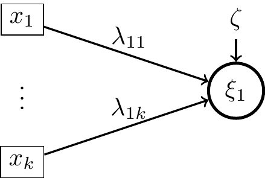

Equations structurelles et leurs applications
Formation pré-congrès Chimiométrie 2024
La modélisation en équations structurelles est d’un certain point de vue une généralisation des modèles de régressions linéaires à des systèmes complexes. Il s’agit en effet d’étudier les relations entre plusieurs blocs de données appariés sur les individus qui sont décrits par un ensemble de variables observées différant suivant les blocs. Dans ces modèles, une variable non observée est associée à chacun des blocs et on s’intéresse à l’ensemble des équations de régression liant ces variables entre-elles. L’estimation des coefficients de ces modèles peut être réalisée à partir de l’analyse des covariances (Jöreskog 1970 LISREL) ou bien l’approche PLS (Wold 1982).
L’analyse des covariances est l’approche qui reste la plus utilisée dans les domaines des sciences humaines et sociales. C’est aussi celle qui admet les fondements les plus aboutis en termes de validation statistique.
L’approche PLS, aussi appelée PLS-PM ou plus récemment PLS-SEM, s’avère quant à elle souvent plébiscitée par sa capacité à associer à chaque bloc une composante (comme en ACP), matérialisant ainsi les variables non observées. Après avoir réalisé une brève introduction mathématique de cette modélisation dans le cadre des modèles à variables latentes, nous illustrerons l’approche par analyse de covariance en psychologie. Dans un second temps, nous présenterons l’alternative avec PLS-SEM en l’illustrant sur des exemples issus de sensométrie et de chimiométrie. Puis nous conclurons sur l’apport de PLS-SEM pour les modèles composites (Dijkstra, 2015 ; Henseler et al., 2014).
Introduction
La régression multiple, l’ANOVA sont des méthodes statistiques très utilisées qui permettent de tester empiriquement des relations (linéaires) entre des variables d’intérêts et une variable réponse.
Elles sont cependant limitées :
- On ne peut pas tester des modèles (pourtant simple) du type
Sous forme d’équations :
\[ \begin{cases} X_2= aX_1+\zeta_2 \\ X_3= bX_2+\zeta_3 \end{cases} \]
- Toutes les variables explicatives sont mesurées sans erreur
Les SEM (Structural Equation Modeling)
La modélisation en équations structurelles est un ensemble de modèles qui permettent de modéliser des relations linéaires entre des variables latentes (ou non observées) ou entre des variables regroupées sous forme de scores composites.
Exemple :
Cette étude nous servira par la suite dans la partie application sur R.
Il s’agit d’une étude réalisée à Nantes en 2017 en partenariat avec la DEPP (Direction de l’évaluation, de la prospective et de la performance) sous la direction du ministère de l’éducation nationale. https://cren.univ-nantes.fr/contrats-de-recherche/be-scol
L’un des objectifs de cette étude est de comprendre quelles variables psychologiques permettent de prédire les performances académiques (math et français).
Les variables envisagées sont :
La satisfaction vis à vis de la relation à l’enseignant (RE) mesurée par 5 items (ex : Certains enfants trouvent que leur maître/maîtresse/professeur(s) les aide(nt) suffisamment)
Sentiment d’efficacité personnelle mesuré par 4 items.
Représentation graphique de la modélisation
L’un des points forts de la modélisation en équations structurelles est qu’il existe un diagramme qui permet de représenter cette modélisation et réciproquement.
Dans la modélisation, on distingue donc deux parties :
Le modèle structurel : on modélise les liens existants entre les différentes variables latentes. Lorsque il n’y a de variable latente dans le modèle le modèle structurel est un modèle path analysis (PA model).
Le modèle de mesure : on regarde la cohérence de l’outil de mesure (ici les items) par rapport au concept qu’ils doivent mesurer. Par exemple les 5 items utilisés pour la relation à l’enseignant sont-ils cohérents et représentent-ils un même concept ?
Modèle structurel
Les trois variables \(R.Ens\), \(SEP\) et \(Math\) sont des variables latentes.
Dans le modèle “théorique” (c’est à dire pour nous le modèle structurel) on envisage qu’une bonne statisfaction par rapport à la relation à l’enseignant (variable exogène) induit un meilleur sentiment d’efficacité personnel qui à son tour induit de meilleures performances en mathématique (variables endogènes).
Remarque : ce modèle est appelé modèle de médiation \(RE\) variable d’exposition, \(SEP\) varioable médiatrice et \(Math\) variable réponse.
Modèle de mesure
Le modèle de mesure va également être testé dans la SEM. Ici il s’agit d’un modèle dit réflectif.
- Modèle réflectif : La variable latente prédit la covariance entre les items (à une erreur prêt).
Les variables observées sont écrites en fonction de la variable latente \[x_i=\lambda_{1i}\xi_1+\delta_i,\] où \(\lambda_{1i}\) sont appelés loadings.
- Modèle formatif : La variabilité de la variable latente est prédite par les variations des items qui la mesure.

Ici le lien s’écrit \[\xi_1=\sum_{i=1}^{k}\lambda_{1i}x_i+\zeta,\] où \(\lambda_{1i}\) sont appelés loadings.
Notations usuelles
On note \(x_1,...,x_p,y_1,...,y_q\) les variables observées.
- Modèle de mesure :
\[\bf{y}=\Lambda_y\eta+\varepsilon, \quad \bf{x}=\Lambda_x\xi+\delta.\]
- Modèle structurel :
\[\eta=\bf{B}\eta+\Gamma\xi+\zeta.\]
Bibliographie :
Jöreskog, K. G. (1970). Estimation and testing of simplex models. British Journal of Mathematical and Statistical Psychology, 23(2), 121–145. https://doi.org/10.1111/j.2044-8317.1970.tb00439.x
Wold, H. (1982) Model Construction and Evaluation When Theoretical Knowledge Is Scarce: An Example of the Use of Partial Least Squares. Cahier du Département d’économétrie, Faculté des Sciences Economiques et Sociales, 06, 79, 1982.
Jöreskog, K.G. and Wold, H. (1982) The ML and PLS Techniques for Modeling with Latent Variables: Historical and Comparative Aspects. In: Joreskog, K.G. and Wold, H., Eds., Systems under Indirect Observation: Causality, Structure, Prediction, Part I, Elsevier, Amsterdam, 263-270.
Dijkstra, Theo K., and Jörg Henseler. (2015) Consistent Partial Least Squares Path Modeling. MIS Quarterly, vol. 39, no. 2, pp. 297–316. JSTOR, https://www.jstor.org/stable/26628355.
Henseler, J., Ringle, C.M. & Sarstedt, M. (2015) A new criterion for assessing discriminant validity in variance-based structural equation modeling. J. of the Acad. Mark. Sci. 43, 115–135. https://doi.org/10.1007/s11747-014-0403-8